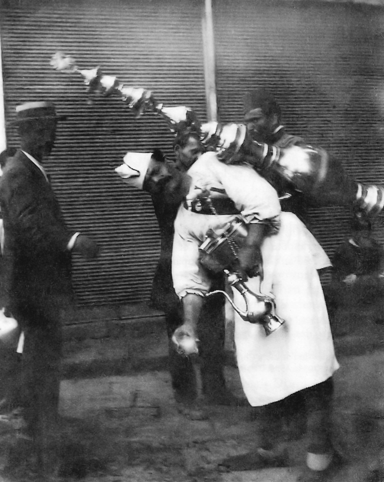

ΕΠΙΚΟΙΝΩΝΙΑ
Η επικοινωνία γίνεται με διάφορους τρόπους είτε με πρόθυμα παιδάκια που θα μεταφέρουν το μήνυμα με μια ελάχιστη αμοιβή, είτε πολύ αργότερα και αφού ολοκληρωθούν τα ανάλογα έργα, μέσω περιπτέρου.
Ο περιπτεράς συχνά εκτελεί και χρέη γραμματειακής υποστήριξης!

ΜΕΤΑΦΟΡΙΚΑ ΜΕΣΑ ΚΑΙ Η ΚΙΝΗΣΗ ΣΤΟΥΣ ΔΡΟΜΟΥΣ
Μπορείτε να μεταφερθείτε από την μία άκρη της πόλης στην άλλη με διάφορα ασφαλή μέσα. Οι πιο ρομαντικοί μπορούν να πάρουν το τραμ, και οι βιαστικοί το λεωφορία της γραμμής.


DELIVERY
Παράδοση ντόπιων εδεσμάτων και ροφημάτων στο χώρο σας ή ακόμη και στη βόλτα σας!

ΓΙΑΤΡΟΙ-ΝΟΣΟΚΟΜΕΙΟ
Η θεσσαλονίκη διαθέτει υπερσύγχρονο ιδιωτικό νοσοκομείο, όπως επίσης και γιατρούς αρκετών ειδικoτήτων.
ΔΙΑΜΟΝΗ
Για την διαμονή σας μπορείτε να διαλέξετε ανάμεσα στα πολυτελέστατα ξενοδοχεία της πόλης ή σε παραδοσιακά καταλύματα με αρώματα ανατολής.